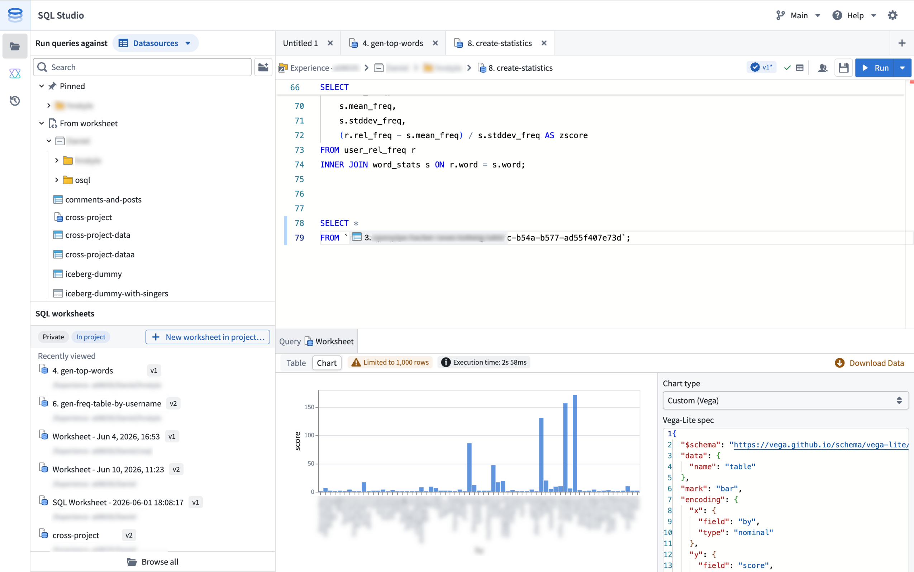
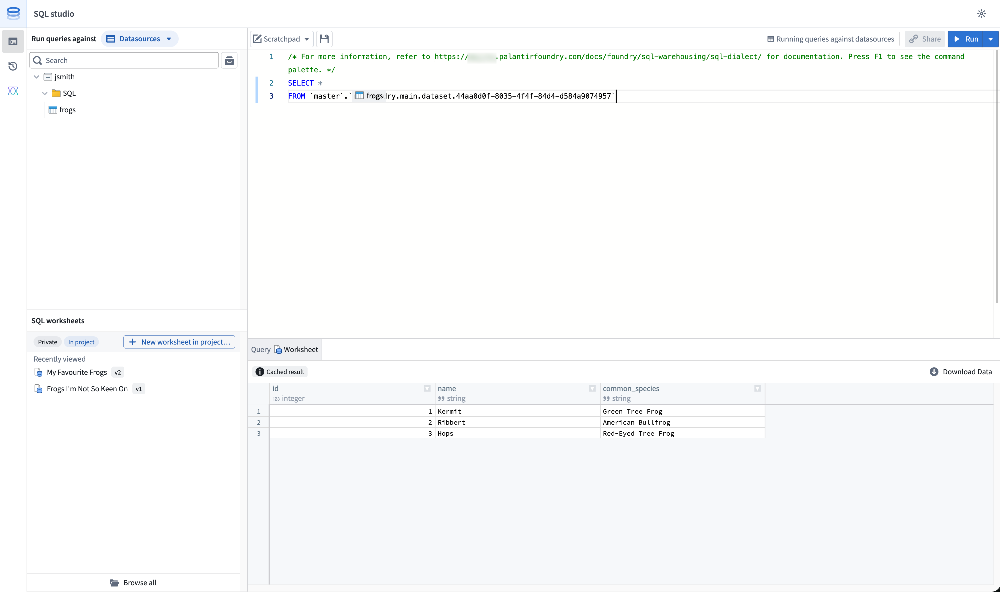

SQL Studio is Foundry's dedicated application for writing and running SQL queries against datasets, tables, and ontology object types. SQL Studio supports interactive analytical workflows, read and write operations on tabular data, and the authoring of Ontology SQL functions (beta).
SQL Studio is built on Foundry's two SQL engines: Ontology SQL for querying ontology object types and Furnace for querying tabular data, which share a common Spark SQL dialect. For embedded SQL access in the context of a specific resource (such as a dataset or object type), see SQL console.

Once enabled by a Foundry administrator, SQL Studio is accessible from:
To enable SQL Studio, Foundry administrators can navigate to the Application access page of Control Panel.
SQL Studio supports two modes that determine which compute engine executes your queries and which resources you can query.
You can switch between modes from the mode selector in the resource browser toolbar. The active mode determines which resources appear in the browser and which engine executes your query.
In data mode, you can query tabular data, such as tabular datasets, Iceberg tables, and virtual tables, using the Furnace SQL engine.
Data mode supports both read and write operations:
SELECT queries.CREATE TABLE operations.INSERT, UPDATE, and DELETE operations on Iceberg tables.Furnace SQL outputs can retain multiple SQL definitions, with one active definition used for scheduled and on-demand rebuilds.
In object mode, you can query ontology object types and many-to-many links using the Ontology SQL engine. Object mode is read-only and supports SELECT queries against object types defined in Ontology Manager.
Worksheets are the primary way to organize work in SQL Studio. You can use a scratchpad for one-off analysis, save a worksheet privately, or save it into a project to share it. Saved worksheets support version history, while unsaved changes are automatically preserved between sessions. For details, see SQL worksheets.
SQL Studio uses Foundry's Spark SQL dialect for both data mode and object mode. The editor provides syntax highlighting, autocomplete for table, object type, and column names, and inline error reporting.
To run a query, select Run in the editor toolbar or use the keyboard shortcut. To run only part of a query, highlight the relevant SQL and run the selection.
In data mode, table identifiers are referenced by filesystem path or resource identifier (RID), wrapped in backticks:
SELECT * FROM `branch_name`.`/path/to/dataset`;
In object mode, object types are referenced by their RID:
SELECT * FROM `ri.ontology.main.object-type.<object-type-rid>`;
For full syntax reference, see the SQL dialect documentation. For mode-specific guidance, see Furnace and Ontology SQL.
SQL Studio includes a conversational AIP side panel that can generate, explain, and debug SQL queries. The panel is available alongside the editor and supports multi-turn interactions within a single session.
The AIP panel has access to:
When generating SQL, the panel can either replace the editor contents with new code or append to the existing query. Each prompt and response is preserved in the session so you can iterate conversationally on the generated output.
The AIP side panel is available for users with the AIP and core assistant features permission enabled.
After running a query, results are displayed in the results panel below the editor.
The default preview limit is 1,000 rows. Users with the appropriate permissions can configure SQL Studio to return up to 10,000 rows per query from the SQL Studio settings menu.
Results can be visualized in a table or as a chart. Both visualizations are subject to the preview limit. For example, if a query produces 100,000 matching rows, you would by default view a table or chart of only the first 1,000 rows.

You can author and publish Ontology SQL functions (Beta) from SQL Studio. Ontology SQL functions are reusable, parameterized SQL queries over ontology objects that can be published as ontology functions and called from across Foundry.
For tabular data querying via the Furnace engine, you can also connect externally using:
For object types querying via the Ontology SQL engine, you can connect externally using the Ontology MCP server, which exposes ontology SQL to MCP-compatible clients.
Access to SQL Studio is governed by the same SQL and download control roles that apply across Foundry. For details on the available roles and how they interact with SQL access, see SQL permissions.